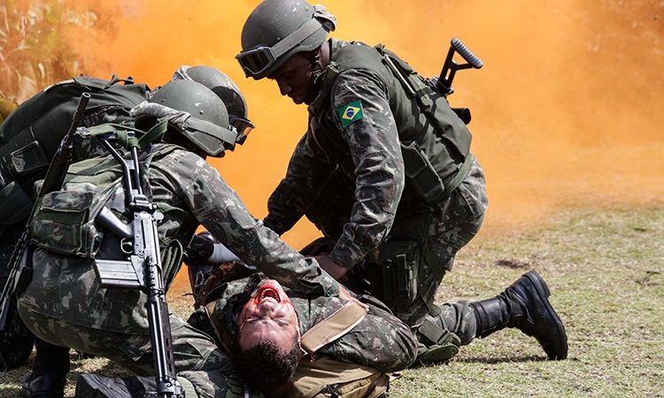
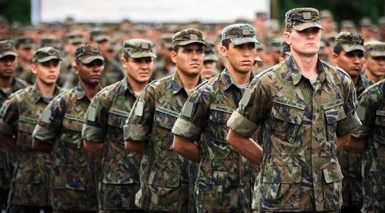

A carreira de um médico pode seguir pelos mais variados caminhos e especializações. Uma das menos lembradas é a carreira militar. Comumente associada apenas aos homens jovens, devido ao alistamento obrigatório, pode ser uma excelente opção para esses profissionais. Nesse artigo, vamos falar mais especificamente sobre o médico do Exército.
Principais atividades
O médico do Exército possui um cargo de grande responsabilidade e pode ser requisitado para atuar em situação muito complexas. Abaixo, temos alguns exemplos:– tratar de ferido em combate;
– auxiliar em acampamentos em lugares inóspitos;
– resgate e socorro de sobreviventes em catástrofes naturais ou não;
– atendimento médico em locais de difícil acesso;
– ajuda humanitária em missões médico-sanitárias internacionais;
– avaliação física de membros do batalhão e ingressantes;
– tarefas administrativas e de gestão da área de Saúde.

Primeiro passo: a faculdade de Medicina
Pode parecer meio óbvio, mas é importante explicar esse ponto. Muitas pessoas acham que as Forças Armadas possuem uma faculdade específica para a formação de seus médicos. A verdade é que é preciso fazer uma faculdade convencional para poder se candidatar ao cargo nas Forças Armadas.Primeiro caminho: o alistamento militar
Quando estão prestes a se formar, muitos estudantes de medicina recebem nas faculdades a visita de representantes das Forças Armadas. Um formulário é disponibilizado nessas ocasiões e deve ser preenchido obrigatoriamente pelos homens e opcionalmente pelas mulheres. Depois, caso haja necessidade, após a sua formação, esses profissionais podem ser convocados para serviço. Não é comum que pessoas não interessadas sejam convocadas – o número de voluntários geralmente é suficiente. Segundo caminho: oficiais temporários
Periodicamente, as Forças Armadas lançam editais para oficiais temporários. O prazo de serviço é de 1 a 8 anos e o alistamento é voluntário. Para se candidatar, é preciso ser brasileiro, ter no mínimo 1,60m (homens) / 1,55m (mulheres) e ter até 38 anos.Terceiro caminho: Escola de Saúde do Exército (EsSEx)
A Escola de Saúde do Exército fica localizada no Rio de Janeiro e tem o objetivo de formar oficiais da área médica. O ingresso é feito através de concurso público e o curso tem duração de 9 meses. Caso você tenha gostado da ideia, saiba que a concorrência é bem grande. Vamos usar o edital de 2021 como exemplo. Foram ao todo apenas 122 vagas, sendo que para médicos sem especialidade foram destinadas 20 vagas. Para os médicos especialistas, a média era de 2 a 5 vagas por especialidade.Fase 1: Exame Intelectual
Prova de conhecimentos específicos. Também pode haver uma prova de títulos, caso a vaga seja para alguma especialidade. São ao todo 50 questões objetivas, divididas da seguinte forma:Clínica Médica ― 20 questões, total de 4 pontos;
Ginecologia/Obstetrícia ― 10 questões, total de 2 pontos;
Pediatria ― 10 questões, total de 2 pontos;
Cirurgia Geral ― 10 questões, total de 2 pontos.
Fase 2: Exames físicos
Apenas os aprovados no exame intelectual passam para essa fase. Os exames físicos incluem várias etapas, que são:
– inspeção de saúde – apresentação de uma séria de exames, incluindo teste ergométrico, audiometria, sorologia para
sífilis e HVI, exame de gravidez, exame de fezes e urina, entre muitos outros);
– exame de aptidão física – corrida durante 12 minutos (2.350 metros ― masculino; 2.000 metros ― feminino); flexões
de braço sobre o solo (19 repetições ― masculino; 10 repetições ― feminino); abdominal supra (30 repetições ―
masculino; 27 ― feminino);
– avaliação psicológica – dividido em duas fases. Na primeira, o exame intelectivo, avalia as aptidões e habilidades
mentais. Na segunda fase, o exame personalógico avalia as características de personalidade e motivacionais do
candidato;
– revisão médica com comprovação dos requisitos para matrícula.
Fase 3: admissão
Após todas essas etapas, o candidato apto é admitido no curso. Após a conclusão, recebe o posto de Primeiro-Tenente do Serviço de Saúde do Exército. É importante ressaltar que caso o médico seja de fora do estado do Rio de Janeiro, o Exército oferece alojamentos.Apesar dos salários serem abaixo do mercado, o médico do Exército conta com inúmeros benefícios. São eles:
– Aposentadoria integral e em menor tempo que as demais profissões;
– 13º salário;
– férias;
– adicional de férias;
– soldo extra para o nascimento de cada filho;
– adicional por mérito (pós-graduação, cursos);
– auxílio fardamento;
– moradia subsidiada;
– facilidade para escola pública de qualidade (colégios militares);
– plano de saúde.